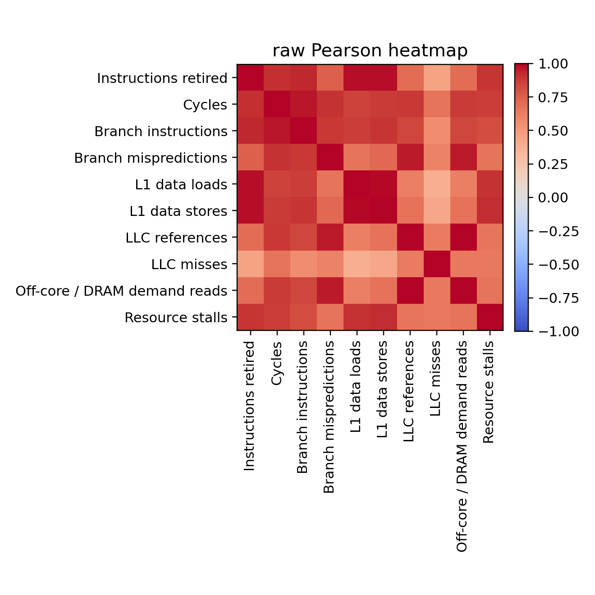
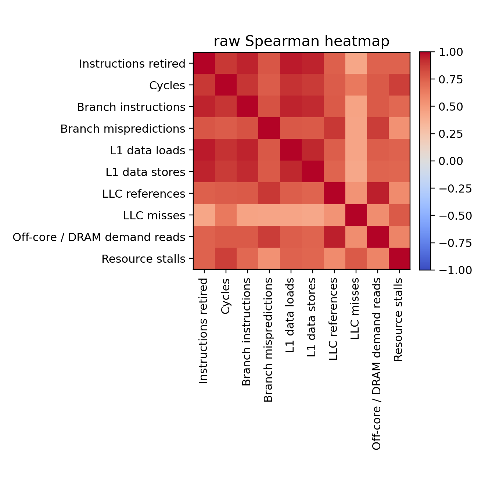
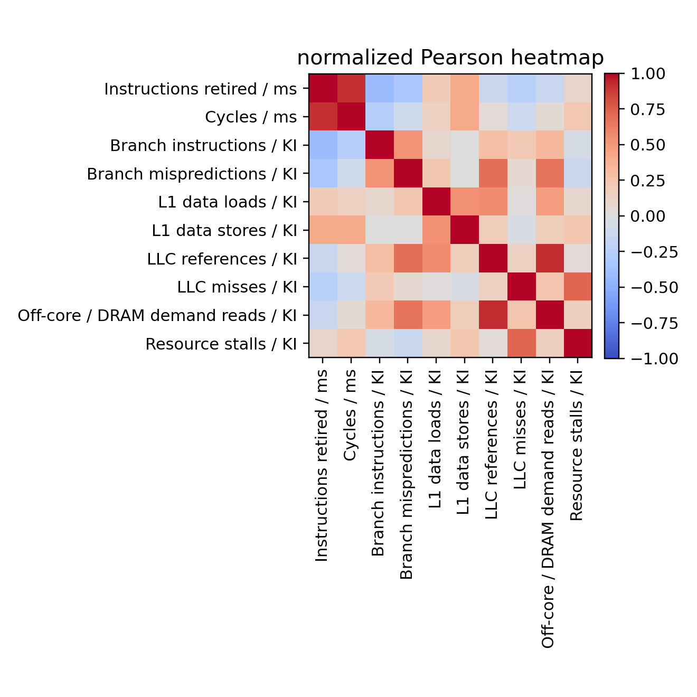
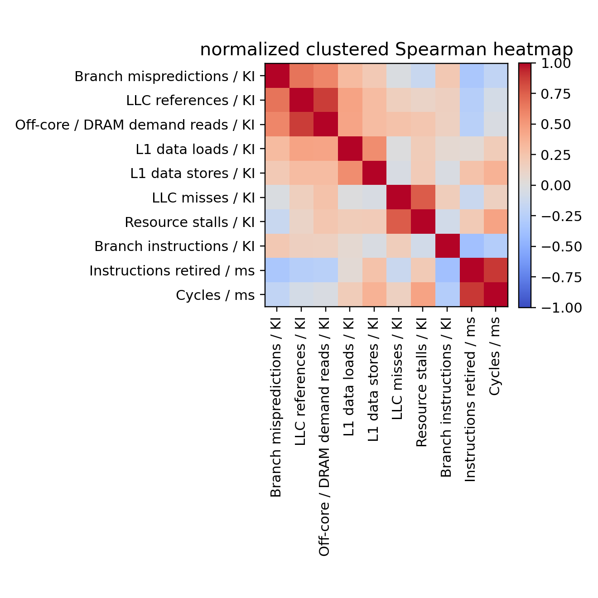
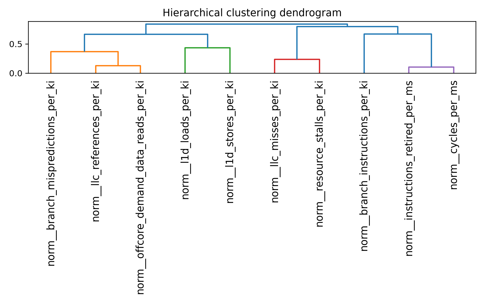
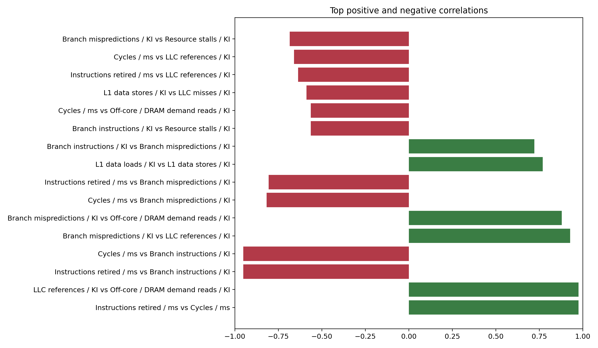
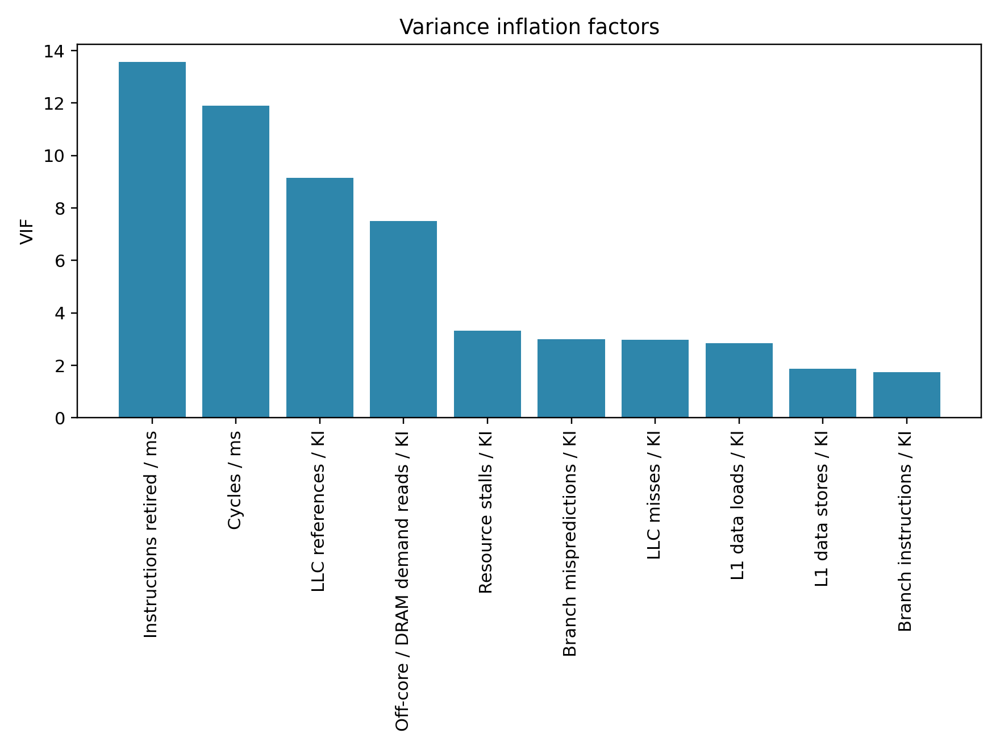

This project collects Linux performance-counter measurements, aligns them with workload metadata and, when available, synthetic phase labels, and studies correlation structure to identify redundant indicators. The main recommendation workflow prefers the normalized Spearman view because raw counters often correlate simply because total activity rose across a sample, not because two indicators capture the same underlying behavior. On this machine, the generated artifact is based on PARSEC workloads collected through parsecmgmt.
Determine which hardware indicators are highly correlated or redundant so a later phase-classification and phase-prediction pipeline can rely on a smaller, cheaper, and more portable counter set.
GenuineIntel / Intel(R) Xeon(R) CPU E5-2680 v2 @ 2.80GHzx86_6420210perf version 5.14.0-611.47.1.el9_7.x86_64False6 / 62TrueFalseparsec.True. SPEC CPU2017 available on this host: False.blackscholes, bodytrack, canneal, fluidanimate, freqmine.1, 2, 4, 8.3.10 ms.test.1594.8 ms median (1193.0 min, 2550.9 max).taskset to the first N online CPUs for the requested thread count.parsec workload generation: standard PARSEC applications and kernels launched through parsecmgmt with taskset-based CPU affinity and the configured PARSEC input set.| Family | Selected Event | Supported | Note |
|---|---|---|---|
| Branch instructions | br_inst_retired.all_branches | Yes | Using preferred host event |
| Branch mispredictions | br_misp_retired.all_branches | Yes | Using preferred host event |
| Cycles | cpu_clk_unhalted.thread | Yes | Using preferred host event |
| Instructions retired | inst_retired.any | Yes | Using preferred host event |
| L1 data loads | mem_uops_retired.all_loads | Yes | Using preferred host event |
| L1 data stores | mem_uops_retired.all_stores | Yes | Using preferred host event |
| LLC misses | longest_lat_cache.miss | Yes | Using preferred host event |
| LLC references | longest_lat_cache.reference | Yes | Using preferred host event |
| Memory read bandwidth | uncore_imc/cas_count_read/ | Yes | Preferred Intel uncore IMC event (system-wide) |
| Memory write bandwidth | uncore_imc/cas_count_write/ | Yes | Preferred Intel uncore IMC event (system-wide) |
| Off-core / DRAM demand reads | offcore_requests.demand_data_rd | Yes | Using preferred host event |
| Resource stalls | resource_stalls.any | Yes | Using preferred host event |
| Total memory bandwidth | derived_total_memory_bandwidth | Yes | Derived from system-wide Intel uncore IMC read+write |
Branch instructions, Branch mispredictions, Cycles, Instructions retired, L1 data loads, L1 data stores, LLC misses, LLC references, Off-core / DRAM demand reads, Resource stalls.Branch instructions, Branch mispredictions, Cycles, Instructions retired, L1 data loads, L1 data stores, LLC misses, LLC references, Memory read bandwidth, Memory write bandwidth, Off-core / DRAM demand reads, Resource stalls, Total memory bandwidth.none.Floating-point arithmetic, L2 misses.none.System-wide perf is blocked on this host. perf_event_paranoid=2; lower it or grant perf capability for uncore collection..| Statistic | Value |
|---|---|
| Interval rows | 9409 |
| Aggregate rows | 0 |
| Runs merged | 60 |
| Manifest runs | 60 |
| Stale raw runs excluded | 213 |
| Observed raw counter columns | 10 |
| Confident counter columns kept | 10 |
| Generic fallback columns excluded | 0 |
| Columns removed as constant | 0 |
| Strict core PMU study ready | Yes |
| Uncore IMC study ready | No |
| Uncore blocked by host policy | Yes |
| Observed system-wide uncore columns | 0 |
The preprocessing stage handles missing values with median imputation after logging missingness, removes constant columns, creates raw and winsorized views, and derives CPI, IPC, MPKI-style cache/branch/off-core metrics, and FP intensity metrics. Raw-counter and normalized-counter views are intentionally separated because raw counts are strongly scale-sensitive. For normalized and derived analysis views, samples with non-positive interval duration, instructions retired, or cycles are excluded to avoid startup/shutdown artifacts.
9306 of 9409.103.non positive cycles: 100, non positive instructions retired: 100, non positive interval duration ms: 0.Raw counters show which indicators move together at the absolute-count level, but these relationships may largely reflect workload intensity. Normalized counters reduce that effect and are the better basis for redundancy decisions. This Xeon host exposes Intel uncore IMC PMUs, but system-wide collection is currently blocked by host policy, so the present artifact reflects confident core PMU analysis only.





Stratified analysis is emitted by workload and thread count when enough samples exist. Without explicit phase labels, workload-local stability is the main check on whether redundancy patterns persist across applications.

Variance inflation factors complement pairwise correlation: a counter can have moderate pairwise correlations but still be redundant when explained by several others together. VIF is therefore best used alongside correlation-threshold grouping instead of as a replacement.

Cycles / msLLC references / KIThe full machine-readable recommendation table remains available in tables/recommendations.csv.
perf_event_paranoid blocks that path, the report explicitly omits those system-wide metrics.perf_event_paranoid or grant equivalent perf capability on this Xeon host if you want IMC bandwidth collected alongside the strict core PMU set.Instructions retired, Cycles, Branch instructions, Branch mispredictions, L1 data loads, L1 data stores, LLC references, LLC misses, Off-core / DRAM demand reads, Resource stalls6instructions_retired, cycles, branch_instructions, branch_mispredictions, l1d_loads, l1d_stores, l2_misses, llc_references, llc_misses, offcore_demand_data_reads, fp_arithmetic, resource_stalls, memory_read_bandwidth, memory_write_bandwidth, total_memory_bandwidth